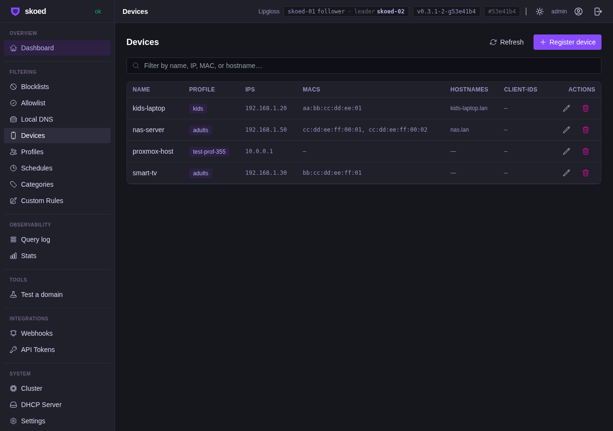
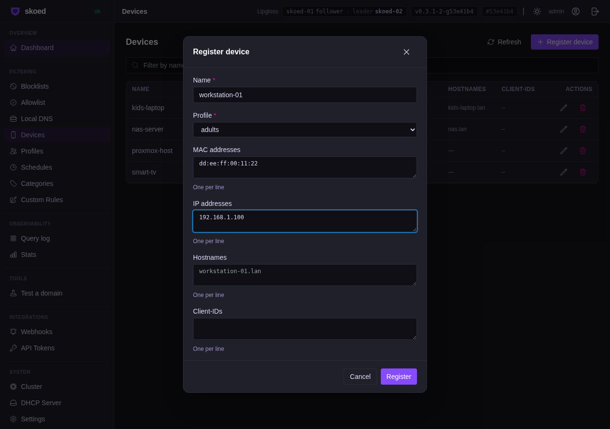
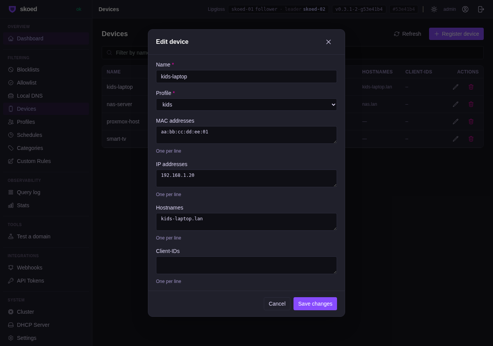
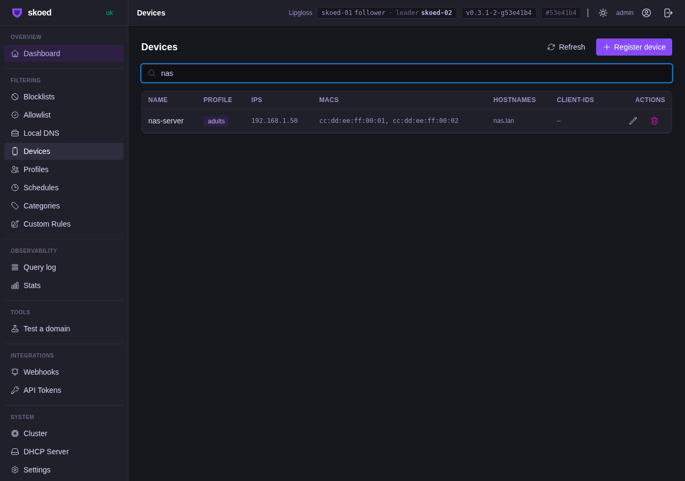

Acceptance Tests
9 PASS| Test | Description | Duration | Result |
|---|---|---|---|
|
TestDeviceRegistryCreate
FS-DeviceRegistryCreate
|
POST /api/v1/devices — creates a device with MACs, IPs, hostnames; verifies 201 + GET round-trip | 1.95s | PASS |
|
TestDeviceRegistryUpdate
FS-DeviceRegistryUpdate
|
PUT /api/v1/devices/:id — updates name, profile, MACs; verifies cluster Raft propagation | 1.95s | PASS |
|
TestDeviceRegistryDelete
FS-DeviceRegistryDelete
|
DELETE /api/v1/devices/:id — removes device; confirms 404 on subsequent GET | 1.36s | PASS |
|
TestDeviceRegistryNameUnique
FS-DeviceRegistryNameUnique
|
Duplicate device name returns 409 Conflict | 2.18s | PASS |
|
TestDeviceProfileMatchExclusive
FS-DeviceProfileMatchExclusive
|
DNS query from device IP resolves to device's profile blocklist (Tier 0 match), not default profile | 2.29s | PASS |
|
TestDeviceMultiNicSingleConfig
FS-DeviceMultiNicSingleConfig
|
Device with multiple MAC addresses uses same profile regardless of which NIC sends the query | 1.59s | PASS |
|
TestDeviceMatchPriorityHighestTier
FS-DeviceMatchPriorityHighestTier
|
When CIDR and device-registry rules both match, device registry wins (Tier 0 beats Tier 1) | 1.80s | PASS |
|
TestDeviceQueryLogEnrichment
FS-DeviceQueryLogEnrichment
|
Query log entries for device IP include device name and profile; match_source shows "device_registry" | 1.56s | PASS |
|
TestDeviceRegistryReplicatedAcrossCluster
FS-DeviceRegistryReplicatedAcrossCluster
|
Device created on leader appears on all 3 cluster nodes within 2 seconds via Raft replication | 1.97s | PASS |
Proxmox 3-Node Cluster Validation
17 PASSCRUD — Create devicePOST /api/v1/devices on skoed-01; 201 response, device persisted to bbolt
CRUD — List devicesGET /api/v1/devices returns created device with correct fields
CRUD — Update devicePUT on existing device changes profile and MACs; 200 OK
CRUD — Delete deviceDELETE removes device; subsequent GET returns 404
Raft replication — skoed-02Device created on skoed-01 visible on skoed-02 within 2s
Raft replication — skoed-03Device created on skoed-01 visible on skoed-03 within 2s
DNS filtering — device IP matchQuery from registered device IP blocked by device's profile blocklist
DNS filtering — unregistered IPQuery from non-device IP uses default profile (not device registry)
Query log enrichmentQuery log shows device_name, profile, match_source="device_registry"
Tier 0 priorityDevice registry match overrides CIDR-based Tier 1 match
Multi-MAC deviceBoth MACs of a multi-NIC device resolve to same profile
EDNS0 MAC extractionDNS handler reads MAC from EDNS0 option 65501 for device lookup
Raft snapshot restoreNode restart from snapshot correctly re-creates config_devices bucket (fsm.init() fix)
Rolling upgrade compatibilityBinary upgrade on follower while cluster active — device registry survives
Devices UI — list viewDevices page shows all registered devices with MACs, IPs, profile columns
Devices UI — register panel"Register device" side panel opens, form fields accept name/profile/MACs/IPs
Devices UI — search filterSearch box filters device list in real-time by name, MAC, IP, or hostname
Critical Fixes Delivered
Raft FSM restore bucket migration —
fsm.Restore() now calls f.store.init() after swapping the bbolt file, re-creating any buckets added since the snapshot was taken. Without this, rolling upgrades on an existing cluster would panic with a nil pointer dereference on the config_devices bucket.
Nil-guard on bucket in Snapshot() —
store.Snapshot() now nil-checks tx.Bucket(bucketDevices) before calling .ForEach(), preventing a panic when snapshotting a node that was restored from a pre-M35.5 snapshot.
Inline blocklist API format — Acceptance test helpers corrected from
"rules": [domain] to "domains": [domain] with "source": {"type": "inline"}, matching the actual API contract.
Demo Screenshots
Proxmox · skoed-01
01
Devices list — registered devices with profiles

02
Register device side panel — name, profile, MACs, IPs

03
Edit device — in-place modification of existing entry

04
Search filter — real-time filtering by name, MAC, IP